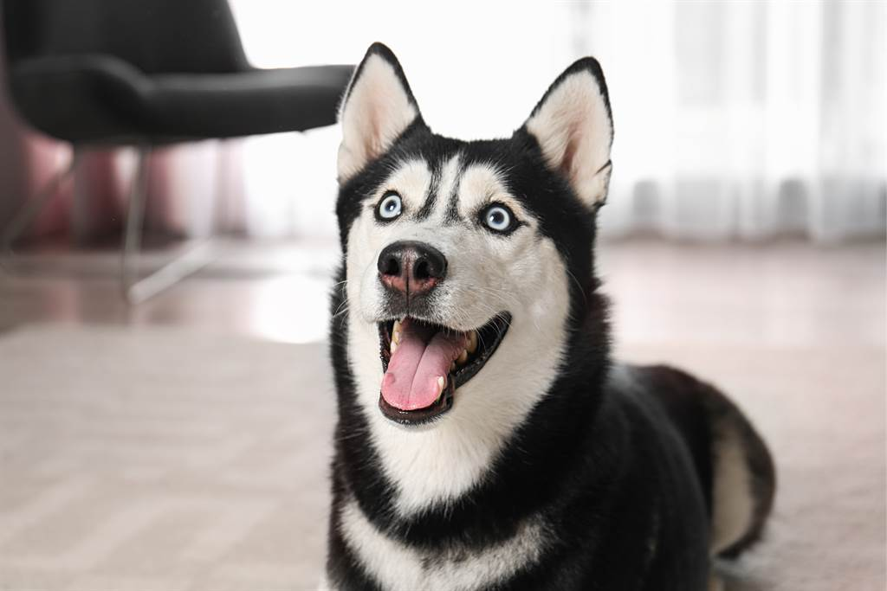

哈士奇

特徵
哈士奇是一種中型工作犬，步態輕盈快捷，行動優雅自如。它適度結實和良好的皮毛，直豎的耳朵，毛刷式的尾巴都顯示了它的北方動物遺傳特徵。
性格
儘管有著狼一般令人害怕的外觀，哈士奇的性情卻很溫順。由於是一種工作犬，它們精力充沛，喜歡探索和運動。這使得它們成為了廣受歡迎的家庭寵物和經常用於展示的犬種。哈士奇可以表現出對人類深厚的感情和強烈的好奇，因為充分社會化了的哈士奇對人類幼兒十分友好，並且喜愛與人類相處，所以它們不能做為看門狗。和所有的狗一樣，哈士奇也有一些缺點。它們並不是那種善於阿諛和討好主人的犬種。很多情況下它們會拒絕執行命令，直到它們找到一個比簡單地向主人讓步更好的理由為止。哈士奇並不適合那些第一次嘗試養狗的人，它們強烈的願望和渴求對於沒有充分經驗的人來說是很難處理的。哈士奇有強烈的奔跑本能，所以最重要的規則之一就是不要讓它們在不安全的地方奔跑。
歷史
據說他們的祖先是已經滅絕的泰米爾狼，這說明了早在幾萬年前，狗狗就已經跟人類保持著一定的關係。居住在西伯利亞的遊牧民族楚克奇族（Chuckchi），因為需要犬隻來協助他們在寒冷的極地氣候中生活，所以使用了一些長相酷似狼的狗來拖曳雪橇，以協助他們度過寒冷的冰原，並且也會利用這些狗來指引飼養的馴鹿。這些狗因為體型中等，而且耐寒、體力佳，因此成了楚克奇人的最佳幫手，這些狗後來就被稱作西伯利亞楚克奇犬，據說就是哈士奇最早的祖先。
飼養注意事項
哈士奇的飼養簡單，因為這種原先在極地工作的超耐力犬種已經非常能夠適應全世界任何地區的任何氣候環境了。
成年的它們只需要每天1～2次的高蛋白質高脂肪的食物，在很多地方，他們的食物一般只食生肉和生魚，但是現在已經有了更適合它們的犬糧，一些動物蛋白含量較高的狗糧就基本夠它們的體能消耗了